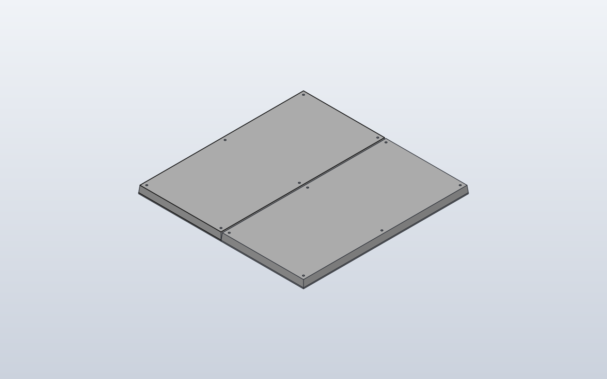

Model preview

Native SolidCraft image, matching this source revision.
First reusable panel assembly from the existing OpenSCAD reference: a 159.70 × 319.71 × 14.50 mm envelope with six Ø3 mounting-hole centres and a grey housing material. Two native occurrences at 160 mm pitch; rear details, PCB, connectors and rotations are future steps.
Files
Download the source and the generated command plan.
Command JSON describes CAD actions; it is not an already-saved .sc design.
Construction stages
- Create Hub75Panel component
- Sketch and extrude the physical front envelope
- Cut six Ø3 mounting holes
- Assign grey housing material
- Copy the component occurrence
- Place the second occurrence at nominal 160 mm X pitch
Python model
"""First reusable HUB75 reference: two native component occurrences.
Based on the measured portrait-orientation panel in:
brainboxemb/2026-006-01.cad.HUB75-display-frame
v1.2/cad/components/hub75_panel.scad
Coordinate mapping for SCPF: X = panel width, Y = panel height,
Z = front-to-rear depth. The front is at Z=0; the original OpenSCAD
component uses X/Z for the front and Y for depth.
Only the straight front and STEP-derived tapered outer envelope, six M3
mounting-hole centres and a housing material are modelled at this stage. This is NOT yet the full rear frame,
PCB, connectors, locator pins or an alternating-orientation assembly.
"""
class Hub75Panel:
width = 159.70
height = 319.71
depth = 14.50
front_depth = 2.00 # straight front: 1 mm mask + 1 mm PCB
rear_inset = 1.25 # STEP taper: inset on every side at the rear
# Source holes: X=7.85/151.85, Z=7.855/159.855/311.855 from
# the drawing's lower-left corner. They become +/-72 and +/-152
# once the panel is centred on the front plane.
mount_x = 72.0
mount_y = 152.0
hole_diameter = 3.0
def build(self):
# Real long sloping sides from Z=2 to Z=14.5, not a short bevel.
body = Box(self.width, self.height, self.depth).taper(
from_z=self.front_depth, inset=self.rear_inset,
)
for x in (-self.mount_x, self.mount_x):
for y in (-self.mount_y, 0, self.mount_y):
body = body + Hole(
d=self.hole_diameter,
depth=self.depth + 0.5,
direction=(0, 0, -1),
).at(x, y, self.depth)
# One gray housing material. Detailed PCB/front/connector colors
# require separate native bodies in a later panel-model iteration.
return body.with_material(
"HUB75 housing", density_g_cm3=1.20, color="#B8B8B8"
)
class TwoHub75Panels:
pitch_x = 160.0 # nominal grid, NOT the 159.70 mm physical width
def build(self):
first = Hub75Panel()
second = first.copy().move(x=self.pitch_x)
# One Python model build, two native SolidCraft occurrences.
# No boolean union and no duplicate editable feature history.
return first + second
TwoHub75Panels()
Native SolidCraft command sequence
- Named CAD parameterparameters.add · name: Hub75Panel_width
{ "command": "parameters.add", "params": { "name": "Hub75Panel_width", "expression": "159.7", "unit": "mm" } } - Named CAD parameterparameters.add · name: Hub75Panel_height
{ "command": "parameters.add", "params": { "name": "Hub75Panel_height", "expression": "319.71", "unit": "mm" } } - Named CAD parameterparameters.add · name: Hub75Panel_depth
{ "command": "parameters.add", "params": { "name": "Hub75Panel_depth", "expression": "14.5", "unit": "mm" } } - Named CAD parameterparameters.add · name: Hub75Panel_front_depth
{ "command": "parameters.add", "params": { "name": "Hub75Panel_front_depth", "expression": "2", "unit": "mm" } } - Named CAD parameterparameters.add · name: Hub75Panel_rear_inset
{ "command": "parameters.add", "params": { "name": "Hub75Panel_rear_inset", "expression": "1.25", "unit": "mm" } } - Named CAD parameterparameters.add · name: Hub75Panel_hole_diameter
{ "command": "parameters.add", "params": { "name": "Hub75Panel_hole_diameter", "expression": "3", "unit": "mm" } } - Named CAD parameterparameters.add · name: Hub75Panel_mount_x
{ "command": "parameters.add", "params": { "name": "Hub75Panel_mount_x", "expression": "72", "unit": "mm" } } - Named CAD parameterparameters.add · name: Hub75Panel_mount_y
{ "command": "parameters.add", "params": { "name": "Hub75Panel_mount_y", "expression": "152", "unit": "mm" } } - Create reusable componentcomponent.create · name: Hub75Panel
{ "command": "component.create", "params": { "name": "Hub75Panel", "grounded": true } } - Create sketchsketch.create · name: Hub75Panel footprint, plane: XY
{ "command": "sketch.create", "params": { "plane": "XY", "name": "Hub75Panel footprint" } } - Rectanglesketch.rectangle.two_point
{ "command": "sketch.rectangle.two_point", "params": { "p0": [ "-Hub75Panel_width / 2", "-Hub75Panel_height / 2" ], "p1": [ "Hub75Panel_width / 2", "Hub75Panel_height / 2" ] } } - Finish sketchsketch.finish
{ "command": "sketch.finish", "params": {} } - Extrusion / cutsolid.extrude · body_name: Hub75Panel
{ "command": "solid.extrude", "params": { "distance": "Hub75Panel_front_depth", "body_name": "Hub75Panel" } } - Create sketchsketch.create · name: Hub75Panel rear start, plane: XY
{ "command": "sketch.create", "params": { "plane": "XY", "name": "Hub75Panel rear start", "offset": "Hub75Panel_front_depth" } } - Rectanglesketch.rectangle.two_point
{ "command": "sketch.rectangle.two_point", "params": { "p0": [ "-Hub75Panel_width / 2", "-Hub75Panel_height / 2" ], "p1": [ "Hub75Panel_width / 2", "Hub75Panel_height / 2" ] } } - Finish sketchsketch.finish
{ "command": "sketch.finish", "params": {} } - Create sketchsketch.create · name: Hub75Panel rear perimeter, plane: XY
{ "command": "sketch.create", "params": { "plane": "XY", "name": "Hub75Panel rear perimeter", "offset": "Hub75Panel_depth" } } - Rectanglesketch.rectangle.two_point
{ "command": "sketch.rectangle.two_point", "params": { "p0": [ "(-Hub75Panel_width / 2) + (Hub75Panel_rear_inset)", "(-Hub75Panel_height / 2) + (Hub75Panel_rear_inset)" ], "p1": [ "(Hub75Panel_width / 2) - (Hub75Panel_rear_inset)", "(Hub75Panel_height / 2) - (Hub75Panel_rear_inset)" ] } } - Finish sketchsketch.finish
{ "command": "sketch.finish", "params": {} } - solid.loftsolid.loft · operation: join
{ "command": "solid.loft", "params": { "sections": [ { "sketch": "Hub75Panel rear start" }, { "sketch": "Hub75Panel rear perimeter" } ], "operation": "join", "targets": [ "Hub75Panel" ] } } - Native Hole featuresolid.hole · direction: [0.0, 0.0, -1.0]
{ "command": "solid.hole", "params": { "position": [ "-(Hub75Panel_mount_x)", "-(Hub75Panel_mount_y)", "Hub75Panel_depth" ], "diameter": "Hub75Panel_hole_diameter", "targets": [ "Hub75Panel" ], "depth": "Hub75Panel_depth + 0.5 mm", "direction": [ 0.0, 0.0, -1.0 ] } } - Native Hole featuresolid.hole · direction: [0.0, 0.0, -1.0]
{ "command": "solid.hole", "params": { "position": [ "-(Hub75Panel_mount_x)", 0, "Hub75Panel_depth" ], "diameter": "Hub75Panel_hole_diameter", "targets": [ "Hub75Panel" ], "depth": "Hub75Panel_depth + 0.5 mm", "direction": [ 0.0, 0.0, -1.0 ] } } - Native Hole featuresolid.hole · direction: [0.0, 0.0, -1.0]
{ "command": "solid.hole", "params": { "position": [ "-(Hub75Panel_mount_x)", "Hub75Panel_mount_y", "Hub75Panel_depth" ], "diameter": "Hub75Panel_hole_diameter", "targets": [ "Hub75Panel" ], "depth": "Hub75Panel_depth + 0.5 mm", "direction": [ 0.0, 0.0, -1.0 ] } } - Native Hole featuresolid.hole · direction: [0.0, 0.0, -1.0]
{ "command": "solid.hole", "params": { "position": [ "Hub75Panel_mount_x", "-(Hub75Panel_mount_y)", "Hub75Panel_depth" ], "diameter": "Hub75Panel_hole_diameter", "targets": [ "Hub75Panel" ], "depth": "Hub75Panel_depth + 0.5 mm", "direction": [ 0.0, 0.0, -1.0 ] } } - Native Hole featuresolid.hole · direction: [0.0, 0.0, -1.0]
{ "command": "solid.hole", "params": { "position": [ "Hub75Panel_mount_x", 0, "Hub75Panel_depth" ], "diameter": "Hub75Panel_hole_diameter", "targets": [ "Hub75Panel" ], "depth": "Hub75Panel_depth + 0.5 mm", "direction": [ 0.0, 0.0, -1.0 ] } } - Native Hole featuresolid.hole · direction: [0.0, 0.0, -1.0]
{ "command": "solid.hole", "params": { "position": [ "Hub75Panel_mount_x", "Hub75Panel_mount_y", "Hub75Panel_depth" ], "diameter": "Hub75Panel_hole_diameter", "targets": [ "Hub75Panel" ], "depth": "Hub75Panel_depth + 0.5 mm", "direction": [ 0.0, 0.0, -1.0 ] } } - Create physical materialmaterial.create · name: HUB75 housing
{ "command": "material.create", "params": { "name": "HUB75 housing", "density_g_cm3": 1.2, "color": "#B8B8B8" } } - Assign materialmaterial.assign
{ "command": "material.assign", "params": { "bodies": [ "Hub75Panel" ], "material": "HUB75 housing" } } - Activate component / rootcomponent.activate
{ "command": "component.activate", "params": { "component": "root" } } - Copy component occurrenceoccurrence.copy
{ "command": "occurrence.copy", "params": { "component": "Hub75Panel", "translate": [ 160.0, 0.0, 0.0 ] } }
Verification: Native verified · snapshot from matching run.
The source and JSON here are from this checkout. A matching native snapshot appears only after successful SolidCraft verification.
Native qualification is reported only when the matching verified image exists.